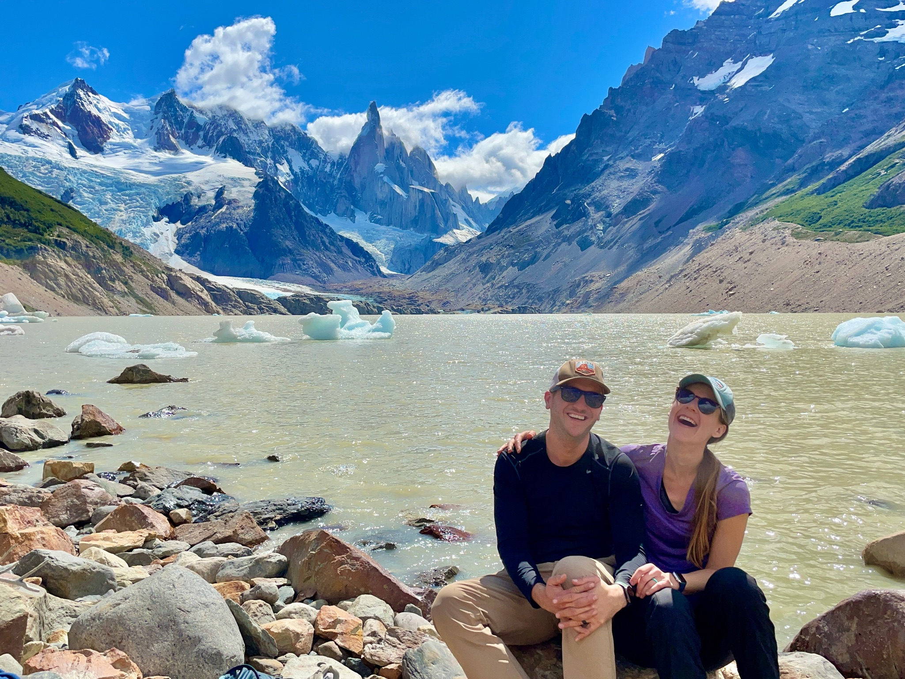

About me
I'm currently part of the operations team for Citi Community Investing and Development,
we are an organization within CitiBank.
I lead systems and reporting for Citi's Charitable Contributions. I am passionate about helping out my community and am inspired by the work we do.
In my free time, I enjoy hiking, surfing, traveling
and playing piano. In February 2022, I went on an incredible backpacking trip through Patagonia.

In January of 2022, my wife and I took a trip to Argentina. We spent 5 days backpacking in Patagonia and 5 days checking out
small towns. The trip was a blast!!
In 2014, I started a new position that required Excel and SQL to be used daily.
I was fascianated by being able to tell a story using data. I was constantaly learning
new skills and addons for Excel. I learned everything including VBA and Macros, between
this and SQL I was more than challenged, it was amazing. After I mastered these skills
I wanted to learn more, I had heard about Python but wasn't sure what it could be used for.
When I learned it could be used for data science I knew I had to learn it.. and that's when
my next voyage started. It has been a fun and rewarding process, along the way I have
automated many reports and tasks that previously tied up my time.
In 2018, I started learning Piano as an adult. Through learning this skill I learned a lot about the importance of atomic habits, small gains day over day lead to big progress.
Check out some of my work on YouTube.